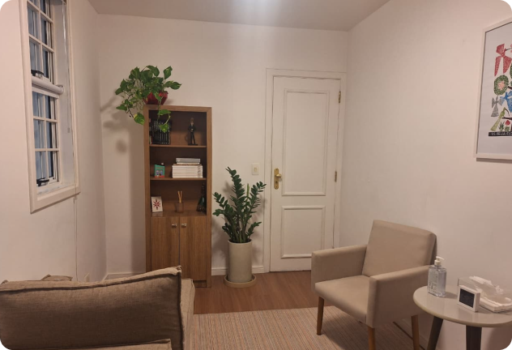

Atendimentos
Psicoterapia e Psicanálise
A Psicanálise é uma prática clínica fundada na escuta da palavra e das manifestações do inconsciente, a partir da associação livre. No processo analítico, o paciente é convidado a falar livremente, permitindo que seus conflitos, angústias e repetições possam ser elaborados ao longo do caminho e o sujeito possa se reposicionar.
O atendimento psicanalítico e a psicoterapia podem ajudar em momentos de sofrimento psíquico, crises pessoais, dificuldades nas relações ou impasses que parecem difíceis de compreender ou transformar sozinho. Também são importantes ferramentas para o autoconhecimento, para revisitar a própria história, compreender movimentos anteriores e atuais e abrir caminho para novas formas de relação consigo e com os outros.
A experiência analítica não se orienta pela busca de respostas prontas ou soluções imediatas, mas pela construção de novas formas de relação do sujeito com a própria história, com os outros e com o desejo.
Os atendimentos são realizados nas modalidades online ou presencial no consultório, em Moema (São Paulo).
